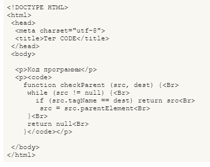

Элемент pre определяет блок предварительно форматированного текста.
Такой текст отображается обычно моноширинным шрифтом и со всеми пробелами между словами.
Тег code предназначен для отображения одной или нескольких строк текста, который представляет собой программный код. Сюда относятся имена переменных, ключевые слова, тексты функции и т.д.
Контейнер tt отображает текст моноширинным текстом. Этот тег относится к группе тегов физического форматирования.
Тег kbd используется для обозначения текста, который набирается на клавиатуре или для названия клавиш. Браузеры обычно помечают текст в контейнере kbd моноширинным шрифтом. Пример: ctrl+c
Тег var используется для выделения переменных компьютерных программ. Браузеры обычно помечают текст в контейнере var курсивным начертанием.
Отображает шрифт в виде верхнего индекса. Шрифт при этом отображается выше базовой линии текста и уменьшенного размера. Пример: 34→34
Отображает шрифт в виде нижнего индекса. Текст при этом располагается ниже базовой линии остальных символов строки и уменьшенного размера. Пример CO2→CO2
Тег blockquote предназначен для выделения
длинных цитат внутри документа.Текст, обозначенный этим тегом, традиционно отображается как выровненный блок с отступами слева и справа (примерно по 40 пикселов), а также с отбивкой сверху и снизу.
Тег q используется для выделения в тексте цитат
. Содержимое контейнера автоматически отображается в браузере в кавычках.
Тег ins предназначен для выделения текста, который был добавлен в новую версию документа. Подобное форматирование позволяет отследить, какие изменения в тексте документа были сделаны.
Тег del используется для выделения текста, который был удален в новой версии документа. Подобное форматирование позволяет отследить, какие изменения в тексте документа были сделаны. Браузеры обычно помечают текст в контейнере del как перечеркнутый. Пример: Лишняя информация
Тег address предназначен для хранения информации об авторе и может включать в себя любые элементы HTML вроде ссылок, текста, выделений и т.д. Планируется, что поисковые системы будут анализировать содержимое этого тега для сбора информации об авторах сайтов.